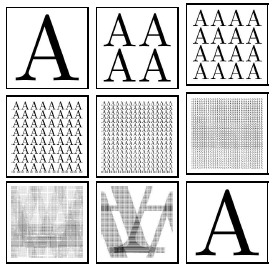
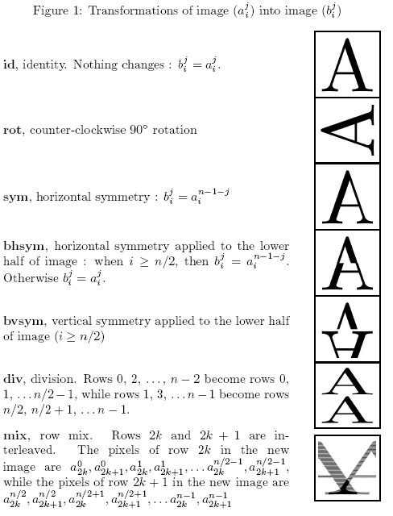

Home Page
F.A.Qs
Statistical Charts
Past Contests
Scheduled Contests
Award Contest
| Online Judge | Problem Set | Authors | Online Contests | User | ||||||
|---|---|---|---|---|---|---|---|---|---|---|
| Web Board Home Page F.A.Qs Statistical Charts | Current Contest Past Contests Scheduled Contests Award Contest | |||||||||
|
Language: Pixel Shuffle
Description  Shuffling the pixels in a bitmap image sometimes yields random looking images. However, by repeating the shuffling enough times, one finally recovers the original images. This should be no surprise, since ``shuffling" means applying a one-to-one mapping (or permutation) over the cells of the image, which come in finite number. Problem Your program should read a number n , and a series of elementary transformations that define a ``shuffling" φ of n x n images. Then, your program should compute the minimal number m (m > 0) , such that m applications of φ always yield the original n x n image. For instance if φ is counter-clockwise 90o rotation then m = 4 . Input Input is made of two lines, the first line is number n ( 2<=n<=210 , n even). The number n is the size of images, one image is represented internally by a n x n pixel matrix (aji) , where i is the row number and j is the column number. The pixel at the upper left corner is at row 0 and column 0.
The second line is a non-empty list of at most 32 words, separated by spaces. Valid words are the keywords id, rot, sym, bhsym, bvsym, div and mix, or a keyword followed by ``-". Each keyword key designates an elementary transform (as defined by Figure 1), and key- designates the inverse of transform key. For instance, rot- is the inverse of counter-clockwise 90o rotation, that is clockwise 90o rotation. Finally, the list k1, k2,..., kp designates the compound transform φ = k1ok2o ... okp . For instance, ``bvsym rot-" is the transform that first performs clockwise 90o rotation and then vertical symmetry on the lower half of the image.  Output Your program should output a single line whose contents is the minimal number m (m > 0) such that φm is the identity. You may assume that, for all test input, you have m < 231 . Sample Input 256 rot- div rot div Sample Output 8 Hint If the input is:
256 bvsym div mix Then, correct output is: 63457 Source |
[Submit] [Go Back] [Status] [Discuss]
All Rights Reserved 2003-2013 Ying Fuchen,Xu Pengcheng,Xie Di
Any problem, Please Contact Administrator